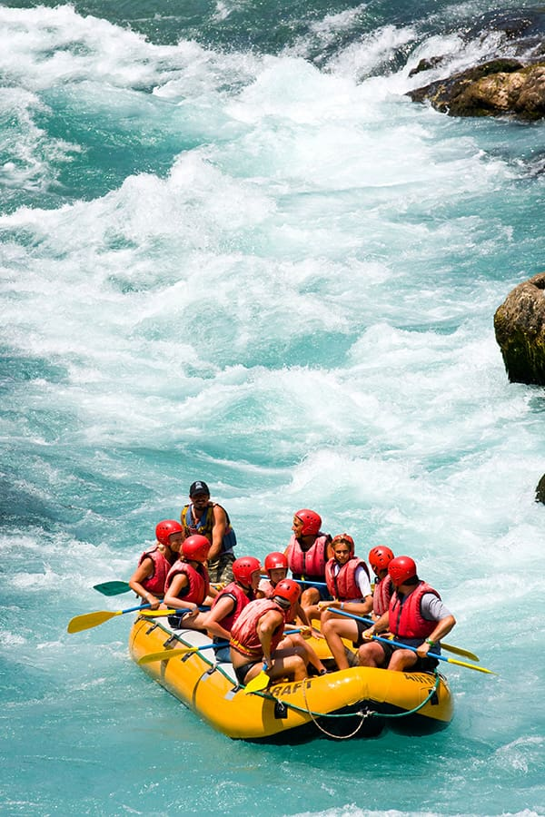

History
Exciting Expeditions started with a small crew, a few rafts and a love for the river. In the early days, our trips were simple: good company, calm stretches of water and the occasional splash of whitewater. As word spread, more adventurers joined us, and our team grew alongside them. Over the years we've added new routes, better gear and experienced guides who know every bend in the river. Through it all, our goal has stayed the same: safe trips, great views and memories that last.

Today, Exciting Expeditions runs trips for everyone from first-time paddlers to seasoned rafters looking for their next big rapid. Every guide on our team is certified in swiftwater rescue and first aid, and many of them grew up on these rivers. We take care of the land we love by following leave-no-trace practices and partnering with local groups to keep the canyons clean. Families who rafted with us years ago now bring their own kids along, and that is the part of our story we are proudest of. Whether you want a relaxing float or a wild ride, there is a seat in our raft waiting for you.